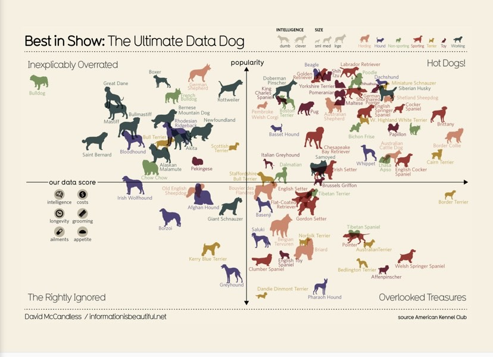

Looking at the representation and communication strategies I’ve used in my Data-Driven Artwork, I would say that it falls in line with the definition that Benzi has provided regarding data art. I’ve chosen to use visualisations that work well with the data set I’ve chosen to use. “Exploration provides readers with the power to find their own story in a set of data”(Thudt, Walny, Gschwandtner, Dykes and Stasko 2018: 2), for the data-art section of my website I would like to tell a story through my data and to be able to tell a story that fits my data set I need to explore different ways to do so in order for my audience to create their own story in conjunction to the art I have presented. As the reading further discusses data-driven storytelling “To understand the issues raised by artistic visualization, it is helpful to have a set of concrete examples in mind.” (Viégas and Wattenberg 2007: 3). When planning how to go about my data art I looked at a few examples of data art on the information is a beautiful website as per guidance from the Viegas and Wattenberg to get a sense of what data art would look like and possibly get some inspiration for my own work. Below I will show a few examples that stood out to me and reflect on why it would work and why it wouldn’t work for my data set:
The data art/visualisation above shows information about dogs in an interesting way, it is showing a lot of information but in a simple way. This visualisation also tells a story that the audience can understand and ultimately come to their own conclusion or even create their own story. Relating this to how I would use this for my data art, I would be able to display and create a story that works with the data set that I have chosen. With this data dat it would mean that I would have to carefully choose which data set I would like to present as this form of data art requires a data set that would be clear and understandable to the audience without causing confusion. Example 2:

The data art/visualisation is displaying information about hangover cures and it displays portions that one can use to recreate the drinks. This form of data art has been done with artistic intent, we see this through the type of visuals that have been used to display the data. It is also clear and easy to understand as it is not clustered and everything has been spaced out well and labelled well. This data art style would not work well for my data set as it will subvert the meaning of my data set. The data art works well as it speaks to portions drinks need whereas my data set does not deal with portions per se. It would be able to help the user understand the data-driven narrative that I want to present, however, it wouldn’t be a clever way of presenting the particular data set I have chosen to use. I would like to display the use of an example that allows me to display multiple pieces of information in such a way that caters to the topic/data set that I am using which also falls in line with the intentions I have towards the final design choices for my data art section. Example 3:

The data art/ visualisation above is presented in the form that a bar graph would be presented however the x-axis is sectioned into parts and the art used is circles to present the plot points as well as the genre of the movie being critiqued. What is interesting about the plot points is that they are all different sizes which may mean something either it being how many people may have watched the movie or it could entail the popularity of that movie which is a creative way of displaying this ‘hidden’ information.
Using this data art would require me to use data that may be commonly used simply because I would be able to gather data/research data that would fall in line with the data represented on this graph and it would make it easier to implement the idea this graph presents.
For my own data art, I want to use the first graph because it worked well with the data set, I’ve chosen not only does it help push forward the narrative I want to present to the audience. The visualisation is also neat and I’m able to present a data set that may potentially require room to present all the data present. I do think that the data art does enhance the meaning of my data set as the art used shows the information that I’m presenting without having to explain what the data is, it also visualises the data with artistic intent, “through the choice of representation, through other aspects of the visual encoding…” (Thudt, Walny, Gschwandtner, Dykes and Stasko 2018: 16). The visuals I would use could be controllers or something related to games to help the audience understand the data being presented at first glance. The data visualisation/art does in a way reveal a new way of thinking about data with regard to the data set I have chosen. I think I have presented my data art well because I did research on what data art is and have used the readings for guidance to help me understand what is meant by data art. My work isn’t perfect however I do think that it follows the principles/characteristics of data art.
 I then decided to use a word cloud to represent my data because it was something I could make interactive. So, each time the user would refresh the page the word cloud would change position and different names of the game would pop up each time.
After receiving feedback on my data art, I noted that my data did not necessarily have meaning, I had only displayed the word cloud for the sake of having data art.
The word cloud did not enhance the data set/ data I was presenting. I used the feedback to reflect and improve the data art section of the website and add meaning to the data art while keeping in mind the data-driven artwork readings and principles.
I decided to then keep my word cloud but make it look better which could potentially enhace the meaning that i'm trying to give to the data being shown.
I then decided to use a word cloud to represent my data because it was something I could make interactive. So, each time the user would refresh the page the word cloud would change position and different names of the game would pop up each time.
After receiving feedback on my data art, I noted that my data did not necessarily have meaning, I had only displayed the word cloud for the sake of having data art.
The word cloud did not enhance the data set/ data I was presenting. I used the feedback to reflect and improve the data art section of the website and add meaning to the data art while keeping in mind the data-driven artwork readings and principles.
I decided to then keep my word cloud but make it look better which could potentially enhace the meaning that i'm trying to give to the data being shown.

For my exam data art, I followed the same process that I did with my data art section. I had the exact ideas but wanted to change the look so that it felt different and more elevated. As shown in the above image I wanted to replace my word cloud with an interactive collage but decide to rather make the collage for my exam data instead. In terms of design, it was a safe choice as I could have done something much more “dramatic” to exceed what I had already done for my data art. Going back and looking at the data art planning documentation gave me time to reflect on what was the best way to present data to which I could give meaning to. For the data art I thought about what a person thinks when holding a game cover, they first look at the front cover then flip it over and read what is written on the back- essentially finding out what the game is about. I wanted to present the same feeling but in a digital space. I did this by including an on-hover function which allows the player to reveal more about the game covers I have presented. Furthermore, I chose to present these specific games because I have engaged with them many times and in a way wanted to tell a narrative about my love for games and give the user not more insight into the kinds of games I engage with, so I took the opportunity and played around with the different genres of games I mostly engage with and including some of my favourite games. By also adding games I like, I do feel like I’ve added a personal touch to my website as it gives the user an idea of how much the person creating this website loves games.